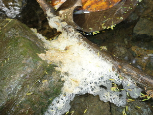
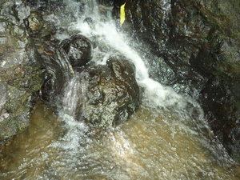

bukè  
/bukɔʔ/
n.
“froth”
1.
n.
froth, e.g., the froth that settles around the top of a pot when cooking rice
Ka bukè iyan ka memaangkag ne eglepew ke due egkale-kale. Due masalig ne kalasi te bukè iling te bukè te weyig, bukè te sinuba, bukè te sebun wey bukè ne egpuun diyè te be-bè te etew ke eg-inum te eggilu.
Wrd.Gloss: froth
Eng. froth; foam; bubbles
OCM: Ethnophysics (822)
DDP: Liquid (1.2.3.1)
Online dict status: -
Usage level: M
vi.
for soap, or the mouth of a person (egbubukè, migbubukè/imbubukè, bubukè, eg><ø-rdpCV-) to froth or foam
Egbubukè ka be-bè ta ke eg-inum ki te eggilu.
Our mouths will froth if we drink poison.
Eng. froth, soap to; foam, soap to; bubbles, soap to produce; froth at the mouth; foam at the mouth
OCM: Ethnophysics (822)
DDP: Liquid (1.2.3.1), Mouth (2.1.1.4)
Online dict status: -
Usage level: M
adj.
(mabukè, mA1-) frothy (esp. of soap)
Eng. frothy (esp. of soap)
Online dict status: -
Usage level: M
2.
v.
for something (e.g. flower or seeds) (egkabuke-kè, nabuke-kè, actor & theme, egkA><ø-rdpCV-) to open up
Eng. open up; open, to
Online dict status: -
Usage level: M
Updated by: RJH,AAA,RJH,NJK,QDL,NJK,RAA,NJK,QDL,RJH
Last updated: 18/Jul/2016
This page last updated: 28-Dec-2019
Copyright © 2009-2014, Matigsalug Language Christian Association, Inc